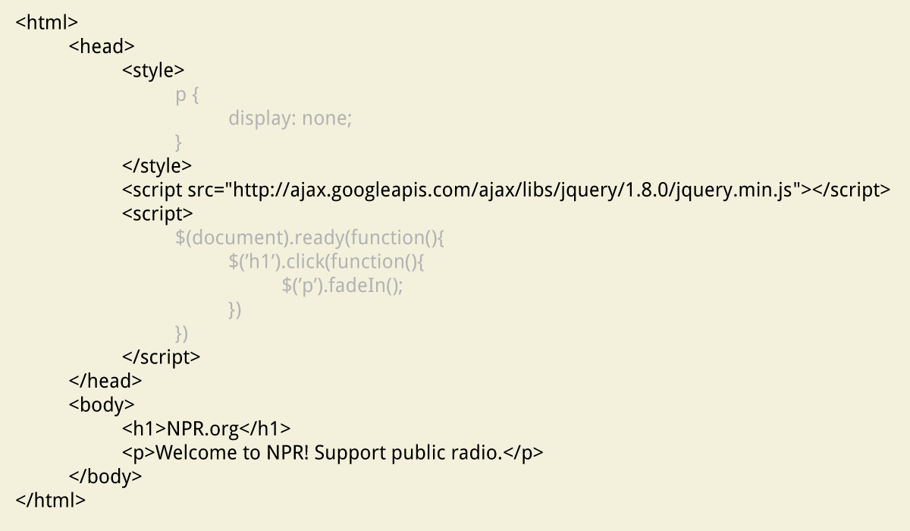
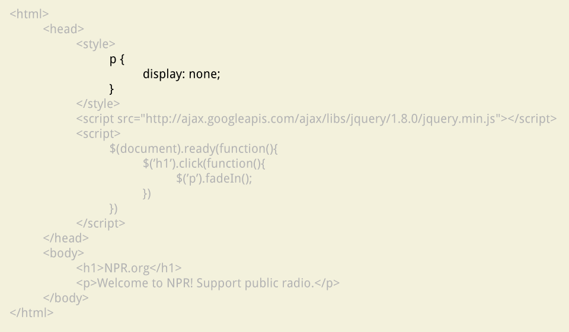
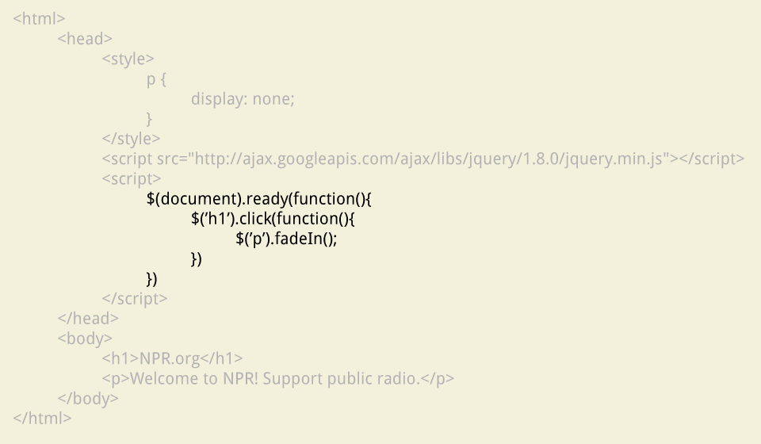

How everything fits together
The three languages
- HTML
- CSS
- jQuery / JavaScript
But let's see how a browser thinks about this stuff.
HTML
CSS
jQuery / JavaScript
So how should we think about it?
If at any point, you're not sure what to do next, ask yourself these questions:
- Do I have my content?
- Have I structured my content with HTML?
- Have I styled my content with CSS?
- Do I want to add some user interaction with jQuery?
- Does it all work?
Writing like a programmer
Let's copy that to W3Schools
Take a quick break!
If all the students could please leave the room for 5-10 minutes.